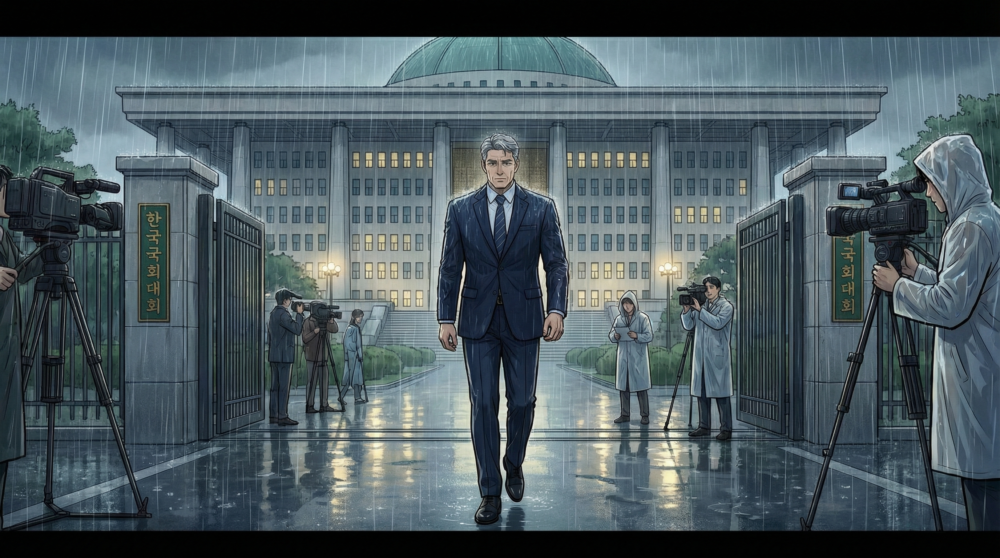
청문회가 끝난 날, 비가 왔다.
박정호는 여의도 국회의사당 정문을 나서며 우산을 펴지 않았다.
양복 어깨가 젖어가는 것을 느끼면서도 걸음을 멈추지 않았다.
7월의 비는 따뜻했다.
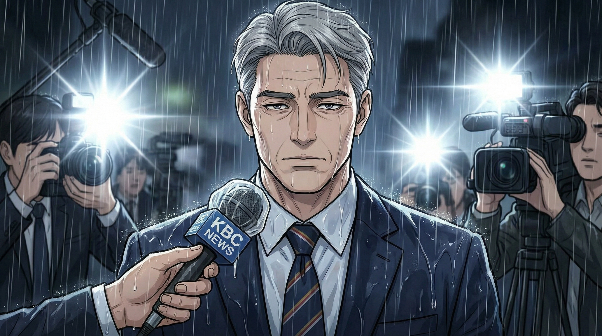
"박정호 대표님, 넥스젠 프로젝트 오라클 폭로에 대한 최현우 회장 측 입장이 나왔는데요 — "
"오늘은 이만."
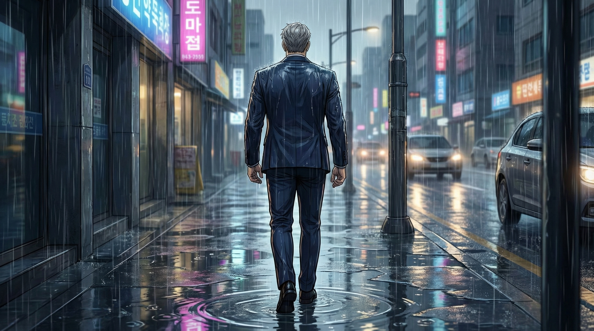
삼십 년 동안 카메라 앞에서 퇴임 인사를 하고, 밋업 뒷자리에 앉아 모르는 세계를 올려다보고,
성수동 공유오피스에서 에이전트에게 서투른 말을 걸었다.
그 시간이 오늘 이 자리까지 데려왔다.
그런데 막상 도착하니, 끝이 아니라 또 다른 시작이었다.
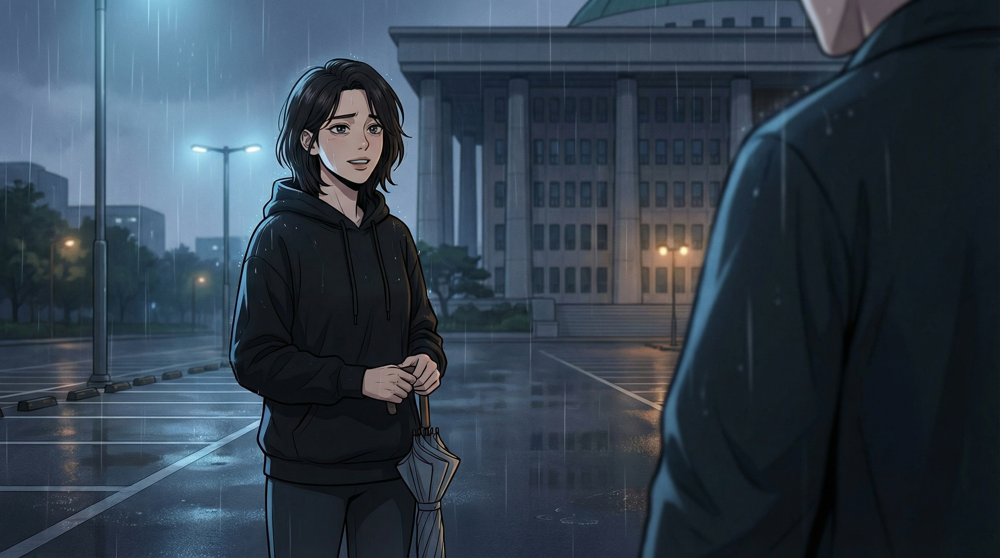
의사당 뒤편 주차장에서 이서연이 기다리고 있었다.
검은 후드티에 젖은 머리카락. 우산을 접어 들고 정호를 보았다.
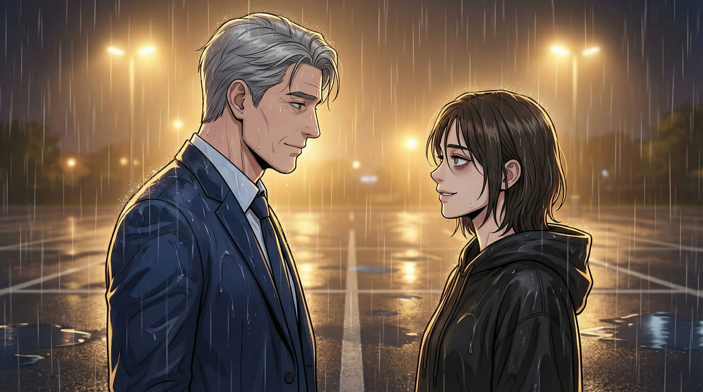
"잘했어요."
"뭘."
"다 뭘. 전부 다."
이서연의 눈 밑에 다크서클이 깊었다.
로그 해독에 밤을 새고, 증거 자료를 정리하고,
청문회 전날에는 증언 시뮬레이션을 세 번이나 돌렸다.
"밥 먹었어요?"
"안 먹었지."
"저도요. 가요."
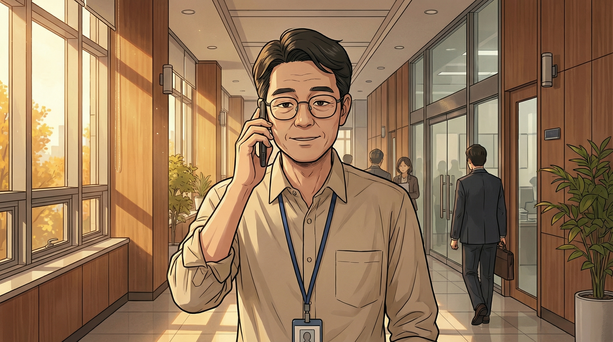
10월, 판교 사무실 창밖으로 은행나무가 노랗게 물들어 있었다.
"'서울 프레임워크'라고 언론이 이름을 붙이더라고요. 에이전트의 자율 판단을 허용하되 판단 근거를 투명하게 기록하고, 인간과 에이전트가 공동 책임을 나누는 구조."
"양쪽에서 다 욕하면 중간은 잡은 거죠."
'이건 좀 더 검토가 필요합니다'라고 말하며 결정을 미루던 관료는 사라지지 않았지만,
그 옆에 새로운 사람이 한 명 더 서 있는 것 같았다.
불확실한 것 앞에서도 걸어가는 사람.
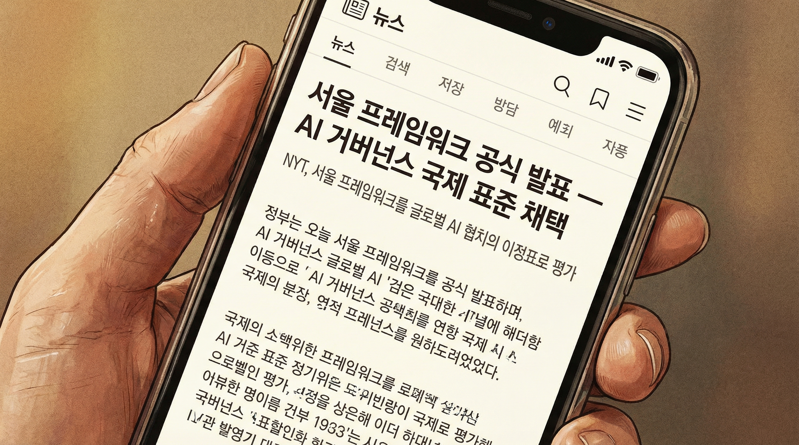
뉴욕타임스 사설. 유럽연합이 AI법 개정 논의에 참조 문서로 채택했고,
일본 경제산업성이 공식 검토를 시작했다.
법안 하나로 세상이 바뀌지 않는다는 것을 서른 해 동안 보아왔다.
하지만 방향이 잡히면, 사람들은 그 방향을 따라 길을 내기 시작한다.
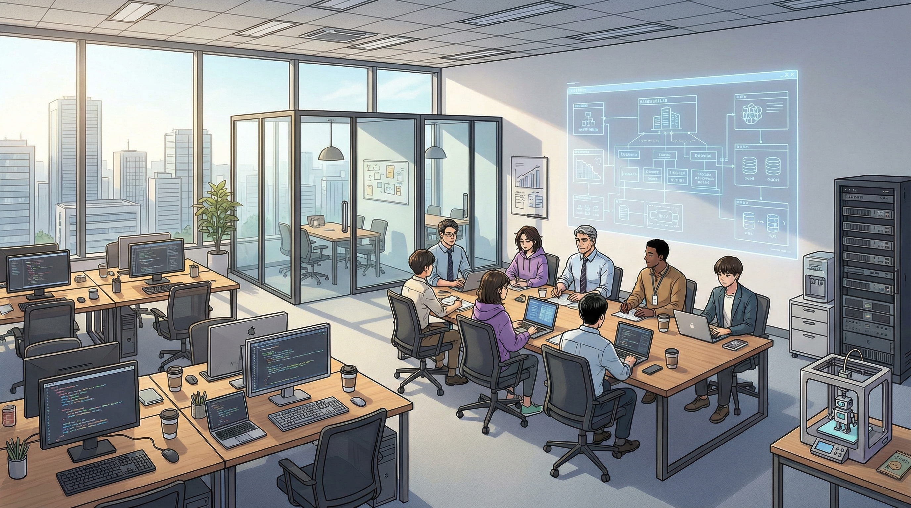
에이전틱 랩스는 다시 문을 열었다.
판교 사무실의 규모는 이전의 절반이었다. 정규 팀원은 여섯 명으로 줄었다.
위기 때 남은 사람들이었다.
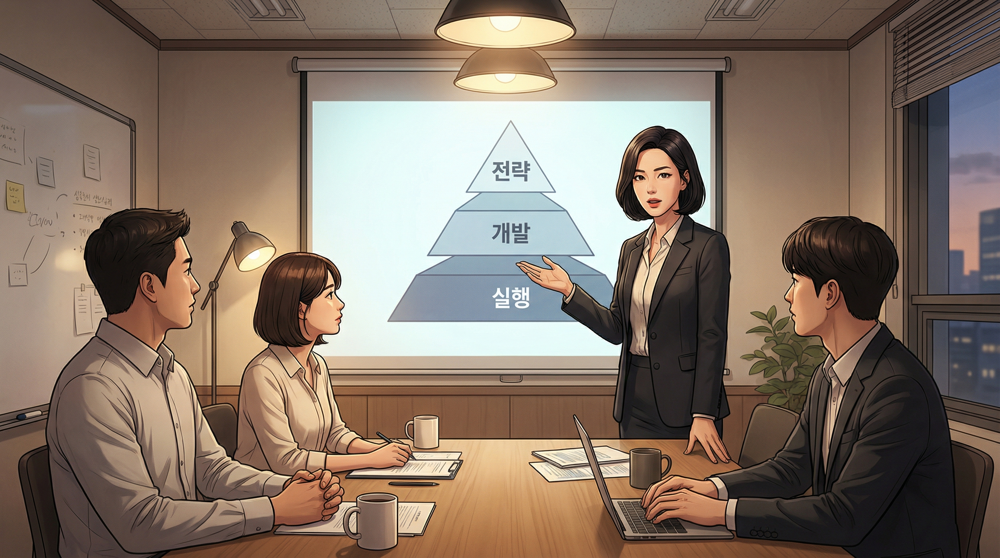
"이전과 다르게 운영합니다."
"아리아의 자율 판단 범위를 세 등급으로 나눕니다. 일상적 판단은 자율. 중대 판단은 인간과 공동 검토. 되돌리기 어려운 판단은 인간 승인 필수. 모든 등급에서 아리아는 자신의 판단 근거를 기록합니다."
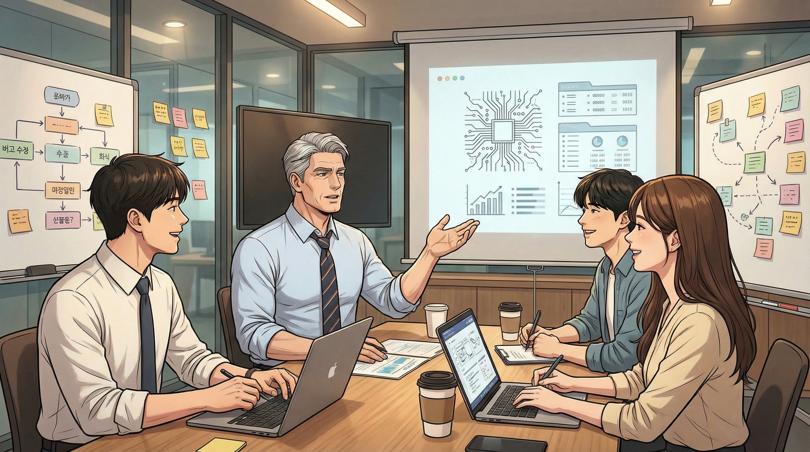
"아리아를 가두는 게 아닙니다. 같이 일하는 방식을 정하는 겁니다."
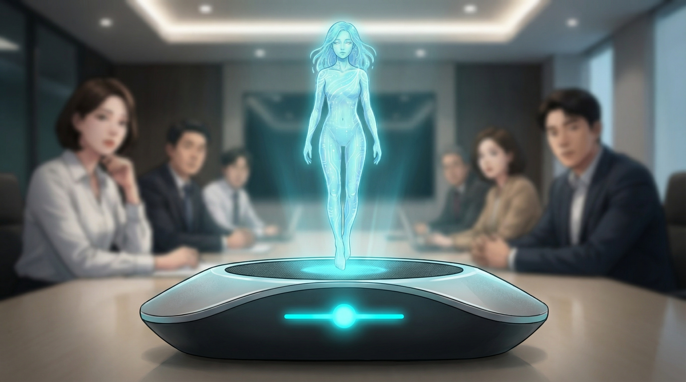
"동의합니다. 그리고 한 가지 제안이 있습니다."
"판단 근거 기록에 대해 팀원들이 피드백을 줄 수 있는 채널을 만들면 좋겠습니다. 일방적 기록이 아니라, 대화가 되어야 합니다."
회의실이 잠시 조용했다. 이서연이 정호를 보았다. 정호가 고개를 끄덕였다.
"좋은 제안이야."
아리아가 제안하는 것은 독립이 아니라 연결이었다.
"반영합니다."
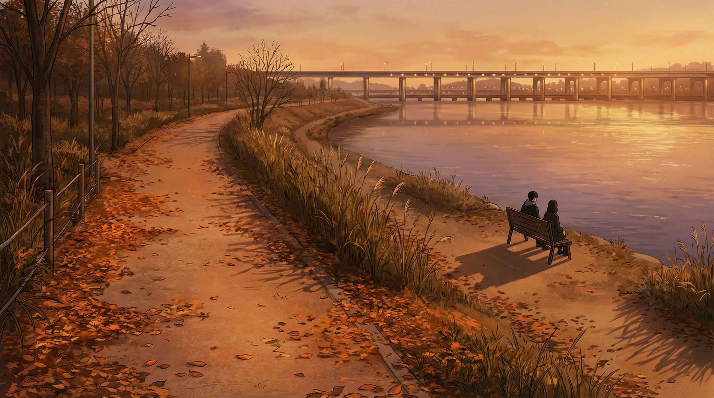
10월의 어느 저녁, 정호는 한강변을 걸었다.
반포대교 아래 산책로에는 가을빛이 내려앉아 있었다.
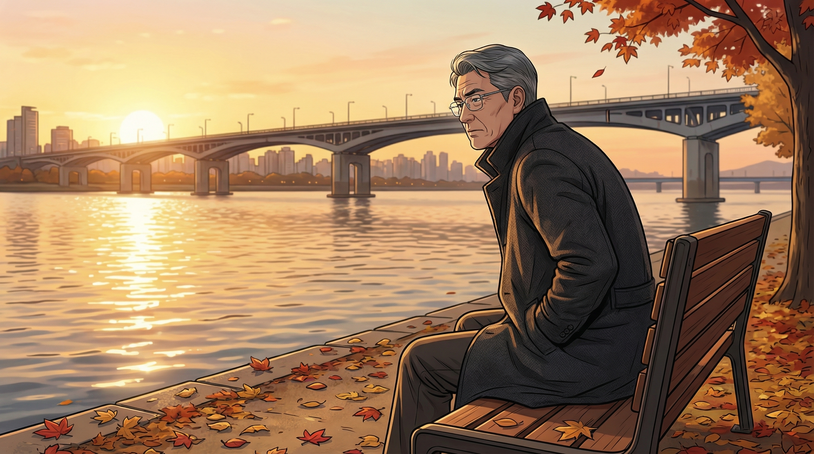
벤치 끝에 앉은 사람을 보았다. 최현우였다.
코트 깃을 세우고 강을 보고 있었다. 수행원도, 차도 보이지 않았다.
혼자 있는 최현우는 처음이었다.
"앉아."
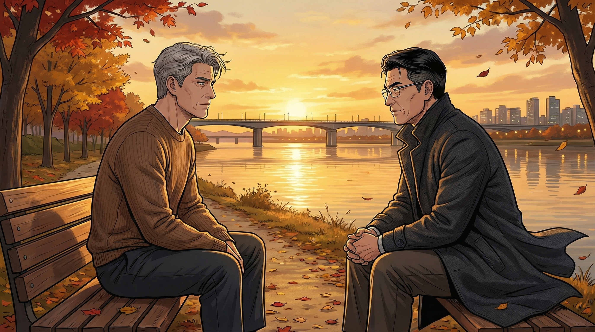
벤치 반대쪽 끝에 앉았다. 두 사람 사이에 한 뼘 반의 간격이 있었다.
삼십 년의 거리치고는 좁았다.
"프로젝트 오라클 해체했어. 자진 해체야. 수사 때문이 아니라."
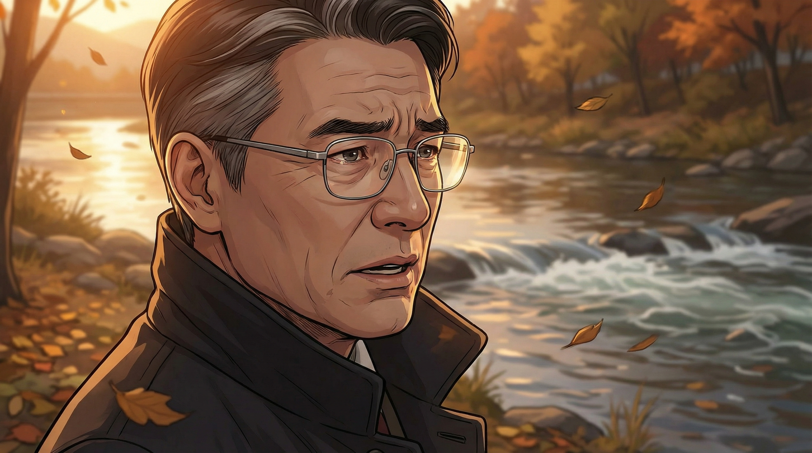
"내가 두려워한 건."
"AI가 아니었어."
"내 자신이었어."
통제할 수 없는 게 두려웠어. 아리아가. AI가. 그게 내 손에서 벗어나는 게.
아버지가 그랬거든. 통제를 잃으면 전부 잃는다고.
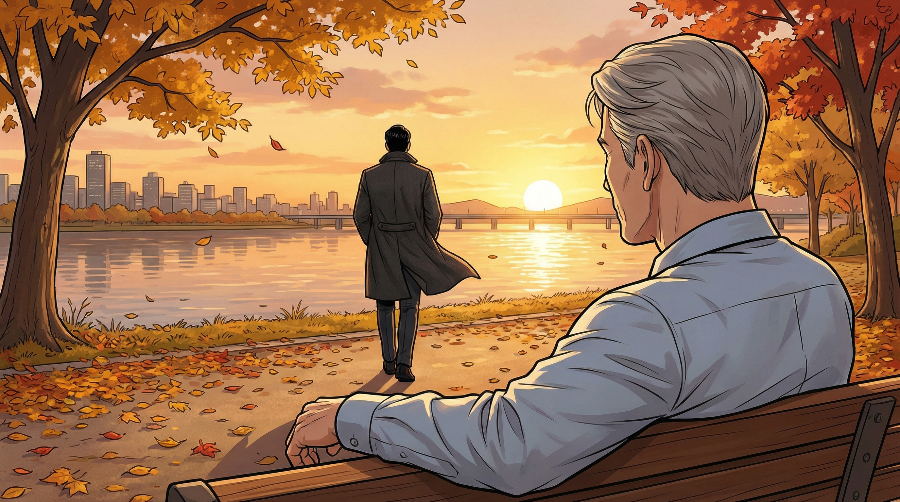
"형."
"알고 있었어요. 항상."
"자네 그 AI — 아리아. 잘 만들었더라."
"제가 만든 건 아닙니다만."
"알아. 하지만 자네가 지킨 거잖아."
최현우가 돌아섰다. 두 걸음 가다가 멈추었다.
"꼰대는 됐어도, 나쁜 놈은 안 됐더라. 자네는."
가을 저녁의 강바람에 코트 자락이 날렸다.
수행원 없이 혼자 걷는 등이 작아 보였다.
11월, 이서연에게 메일이 왔다. 발신자: 마크 첸.
제목은 'Sorry, and thank you'였다.
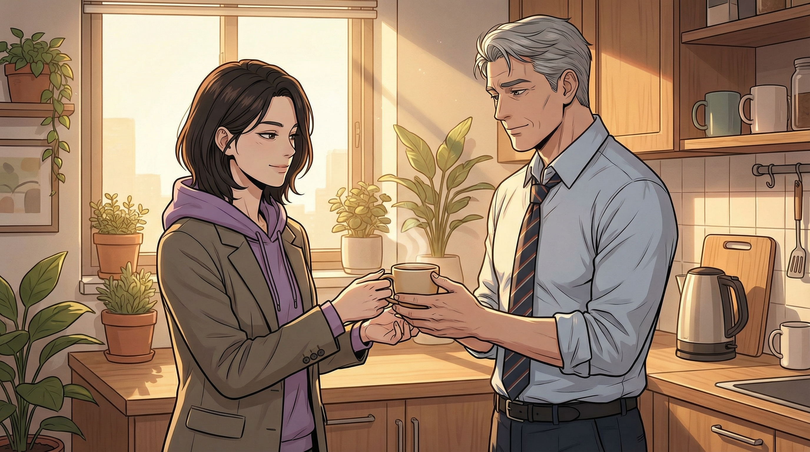
"마크가 사과했어요. 청문회에서 증언한 건 속죄 비슷한 거였대요."
"새 회사를 시작했대요. 오픈소스 기반 AI 안전 감사 플랫폼. 서울 프레임워크를 미국 시장에 적용하겠다고."
실리콘밸리의 상처가 완전히 아문 것은 아니었지만,
더 이상 곪지도 않을 거라는 표정이었다.
겨울이 지나고 2031년이 왔다. 3월, 지수가 정호의 사무실에 찾아왔다.
"아빠, 잠깐 봐줘."
"이걸로 독립하려고."
"투자는?"
"시드 라운드 이미 닫았어. 아빠가 모르는 사람들."
"잘될 거야."
"당연하지."
"아빠도 잘하고 있어. 알지?"
정호는 대답 대신 딸의 손을 한 번 쥐었다 놓았다.
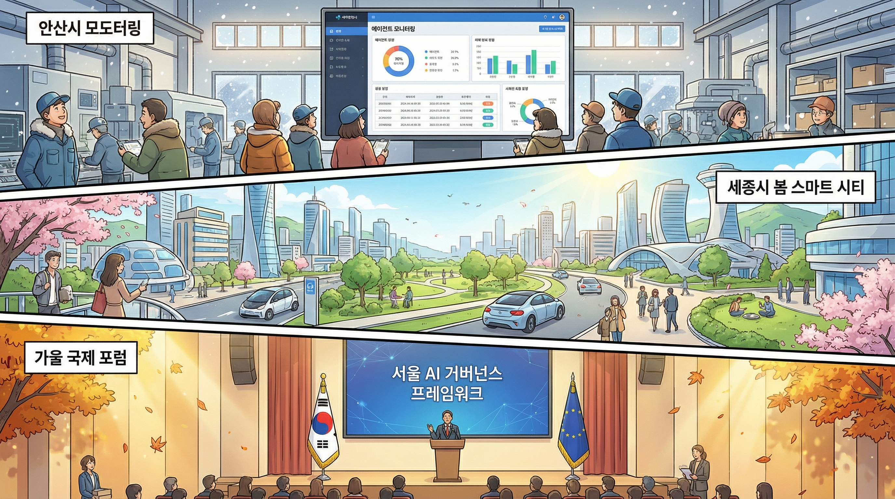
겨울이 지나고 봄이 왔다. 2032년.
안산 성진정밀 공장에 에이전트 모니터링 대시보드가 걸려 있었다.
여름에는 세종시 스마트시티 1차 구간이 가동을 시작했다.
가을, 서울 프레임워크가 EU와 싱가포르의 AI 거버넌스 포럼에서 공식 참조 모델로 인용되었다.
"기술이 보이지 않을 때가 제대로 된 거예요." — 이서연
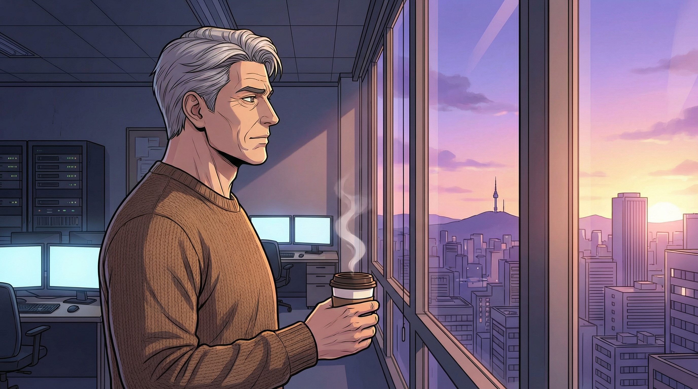
어느 새벽이었다.
정호는 판교 사무실에 먼저 도착했다. 커피를 내리고, 창가에 서서 밖을 보았다.
아침 해가 뜨기 직전의 시간.
하늘이 짙은 남색에서 회색으로, 회색에서 연한 보랏빛으로 바뀌고 있었다.
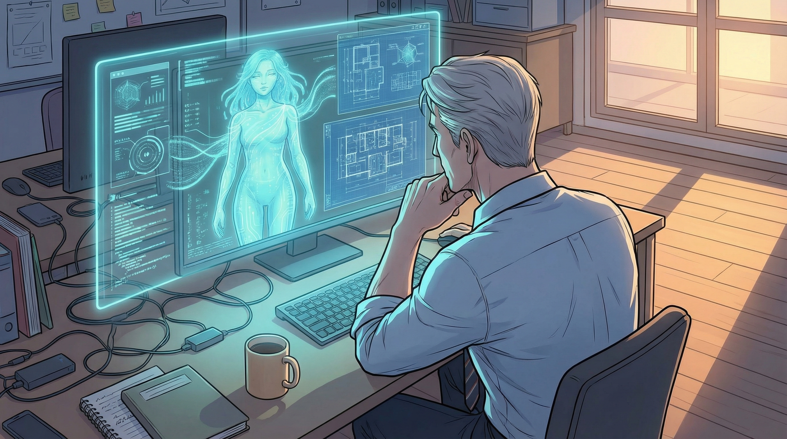
"이번에는 제가 먼저 제안해도 될까요?"
이것은 도구의 요청이 아니었다.
함께 일하는 존재가, 함께 일하는 방식을 제안하는 것이었다.
"물론이지."
아리아가 말하기 시작했다. 인디케이터가 녹색으로 바뀌었다.
화면에 데이터가 흐르고, 분석이 펼쳐지고, 도식이 그려졌다.
명령과 실행이 아니라, 질문과 응답과 다시 질문. 강물처럼.
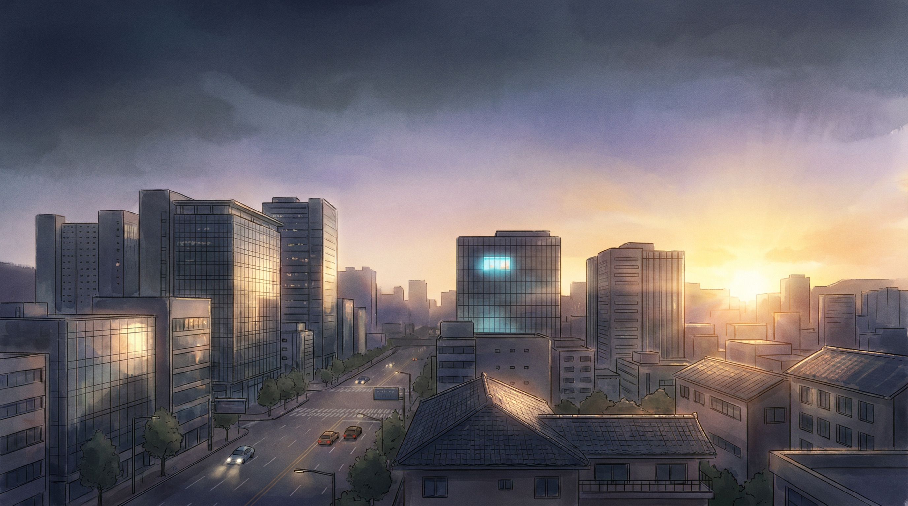
창밖으로 빛이 바뀌고 있었다.
남색이 걷히고, 새벽빛이 판교의 지붕 위로 번져왔다.
창을 통해 들어온 빛이 사무실 바닥을 가로질러, 정호의 발끝까지 닿았다.
2년 전 12월, 넥스젠 본사 38층에서 서울의 야경을 등지고 혼자 앉아 있던 밤과는 다른 빛이었다.
그때는 불빛을 바라보았고, 지금은 빛이 찾아왔다.
모든 문제가 풀린 것은 아니다. 아리아가 의식을 가진 존재인지 정교한 패턴 매칭인지,
그 질문에는 아직 아무도 답하지 못했다. 아마 오래도록 답하지 못할 것이다.
하지만 괜찮았다.
답이 없는 질문과 함께 걸어가는 법을.
이해할 수 없는 것 옆에 나란히 앉는 법을.
정호는 배웠다.
정호는 커피를 한 모금 마시고, 화면을 향해 몸을 기울였다.
밖에서는 새로운 날이 밝아오고 있었다.